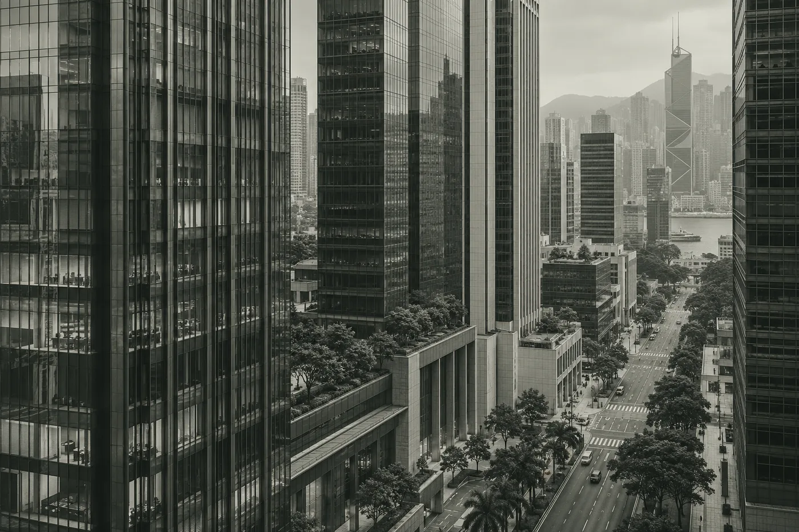
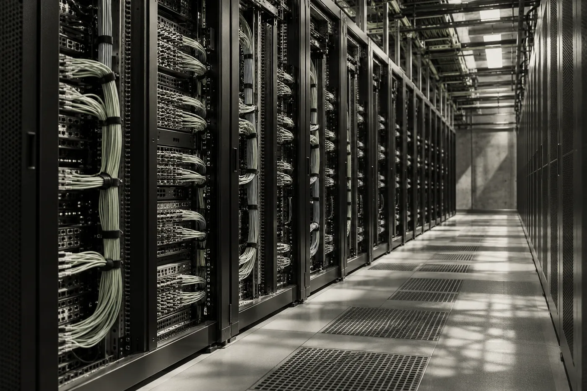

Perspektif
global. Keyakinan
Keyakinan
terukur.


Melampaui batas pasar
Melampaui batas pasar
Menyatukan perspektif
Menyatukan perspektif
Peluang berubah. Prinsip tetap.
Kami melihat dunia melalui hubungan antara perubahan ekonomi, kualitas aset, dan risiko yang menyertainya.
Riset
Konstruksi
Risiko
Satu perspektif. Tiga disiplin.
Riset membentuk keyakinan. Konstruksi menentukan eksposur. Risiko memberi batas. Ketiganya bertemu dalam setiap keputusan.
Sebuah aset bisa menarik. Sebuah portofolio harus masuk akal.
Risiko tidak selesai dibaca melalui satu angka. Kami mempertimbangkan kerugian, likuiditas, konsentrasi, serta keadaan ketika beberapa asumsi gagal sekaligus.